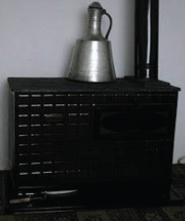

Evlerde çeşitli şekillerde ısınma yöntemleri uygulanırdı. En yaygın olanı, odun ya da kömür yakılan sobalardı. Bu sobalar, sabah erken saatte kalkan anneler tarafından yakılır ve sürekli ateşi beslenerek, gün boyunca yakılmaya devam ederdi. Evin en çok kullanılan, herkesin bir arada oturabildiği yerlere kurulan bu sobalar genelde Auer, Vezüv gibi markalar olurdu. İçerde yanan ateş sonucu çıkan dumanlar, borular vasıtasıyla dışarı atılırdı. Boruların boyları farklılık gösterir, arada bağlantı gereken yerlerde “dirsek” denilen köşeli malzemeler kullanılırdı.
İçindeki odun veya kömürler yanarken sobadan gürül gürül sesler gelirdi. Bu sesler ve havaya yayılan tatlı sıcak o yuvayı daha bir yuva yapar, hem bedenlerimiz hem yüreklerimiz ısınırdı. Arada bir ağzına kadar doldurduğumuz sobanın içinde hareketlenmeler olur, altta iyice yanmış olan malzeme formunu kaybederek üstüne binen yükü taşıyamaz hale gelirdi.
Kış sabahları yataktan çıkmayı istemez, annemiz sobayı yaksa da öyle kalksak derdik. Dışarıda kar, evde huzur… Sobanın kendisine has kokusunu, üstünde kaynayan çaydanlığın çıkardığı sesi severdik.
Çocuklarla sobaların hikâyeleri vardır bazen acıyla biten. Merakımıza yenik düşer çeşitli denemeler yapardık. Kimimiz üstüne kolonya döker, alevleri görmek isterdik. Kimimiz boya kalemlerini tam hararetli olduğu zaman üstüne sürer, silgileri eritirdik. Hepimizin elbiselerinin bir tarafında yanık ya da ellerimizde kollarımızda nasıl olduğunu bilmediğimiz yara izlerimiz olurdu.
Sobanın sıcağına yanaşır, dakikalarca bekler sonra da aynaya koşardık, kızaran yüzümüzü görmek için. Geceleri alevlerin sarı kırmızı dansını seyrederdik. Tavanlara vuran ışık yansımaları gece lambasının ışığından daha güzeldi. Biri kapıyı açtığında “ört, ört,” diye bağırırdık içerdeki sıcak kaçmasın diye. Sıcağın geçtiği borularda hem kurutur hem ütülerdik önlüklerimizin yakasını, mendilleri, çorapları. Önünde leğen içinde banyo yapılırdı.
Sobanın o yuvarlak borularına ek olarak uygun bir askı modeli üretilmişti. Çok ergonomik ve faydalı bir eşyaydı. Bir kelepçe ve vidalar marifetiyle tutturulur, uzanan tellere yıkanmış çamaşırlar asılarak kurutulurdu. Sıcağından yararlanmak için çok ideal ürünlerdi. Yani sobalar ana görevleri ısıtmak olduğu halde çok fazla işlev görürdü. Modellerine göre değişmekle birlikte içinde yemek pişirilir fırın olur, üstüne kestane serilir, ekmek kızartılır, süt kaynatılır, su ısıtılırdı. Soğumasın diye çaydanlık konur, evin havası değişsin diye elma, portakal kabukları dizilirdi üstlerine güzel koku yayarlardı. Ve daha önce dediğim gibi, soğuk kış günleri evi gerçek bir yuva yapardı.
Kışları her kartopu oyunundan dönüşte sobaya adeta yapışır, ayaklarımıza üç dört çift üst üste giydiğimiz çorapları ya da büyük annelerimizin ördüğü yün çoraplı ayaklarımızı dayardık sobanın yan duvarlarına. Islak çoraplardan buharlar yayılır, onlar kurumaya dururken, biz ısınmaya çalışırdık.
Sobada yakmak için gerekli malzeme odun ya da kömürdü. Gazlı sobalar da vardı. Bunlara gazlar genelde nalbur malzemeleri satan dükkânlardan temin edilirdi. Plastik kaplarda ya da tenekelerde taşınırdı litre ile satın aldığımız gazlar.
Hemen üç beş sokakta bir oduncu ya da kömürcüler olurdu. Bu meslek dalı kaloriferli apartman sayısının artmasından sonra azalmış, doğal gaza geçildikten sonra ise tamamen ortadan kalkmıştılar. Alınan odunlar kömürler genelde at arabaları eşliğinde taşınır, ton hesabı ya da çeki (250 kg) denilen bir ölçü birimiyle alınırdı. Küfe ile de alım yapılırdı.
Kömürler cinslerine göre ayrılırdı. Kok, linyit, taş kömürü vb. fiyatları da kalitesine göre değişirdi. Fazla alım yapıldığında (3-4) ton gibi bu kömürler kamyonla taşınırdı. Gelen kamyon büyük ve yollar dar olduğu için bu zamanlarda sokak trafiğe kapanabilirdi.
Evin önüne yıkılan bu malzemeler ya aile bireyleri tarafından ya mahalle gençlerinin yardımıyla (ufak hediyeler karşılığında. Örnek: Bir kola bile olabilir,) taşınır ya da işleri bu olan adamlara bir bedel karşılığında taşıtılırdı. Her evde bunları kırmaya yarayan kocaman baltalar olurdu. Bazı sobaların kömür taşımaya özel kovaları vardı. Bu kovalar getirilen kömürleri sobaya direk olarak boşaltmaya yarardı.

Hazır hale getirilen malzemeler kömürlüklere taşınırdı. Bu kömürlükler evlerin arka taraflarında olur, kapılarına asma kilitler takılırdı. Yazları kullanılmayan bazı eşyalara depo vazifesi görürlerdi. Bisikletler orada saklanır, iyice sarılıp sarmalanmış eşyalar muhafaza edilirdi. Bazı gizli eşyalar ailenin haberi olmadan burada saklanabilirdi. Yakalanırsanız rezilliğin bini bir para. Bizim de kardeşimle bir kömürlük hikâyemiz vardır:
O sıralar seyrettiğimiz karate filmlerine özenerek bir kursa yazılmak istemiştik. Sonunda kardeşimle birlikte kayıt olduk. Bir iki kuşak atladıktan sonra bir yaz gecesi kurstan kaytaralım demiştik. Torbalara koyduğumuz kıyafetleri kömürlüğe saklayıp, dönüşte almak üzere arkadaşlarımızın yanına koştuk. Saat dolduktan sonra döndüğümüzde eşyaları koyduğumuz yerde bulamadık.
Meğer annem bakışlarımızdan! anlamış yapacaklarımızı.Utana sıkıla eve girdiğimizde, ileride yapacağımız her yanlışta kafamıza kakılacak şeylerden belki de ilkiyle muhatap olmuştuk. “Karate dediniz gönderdik, ne yaptınız! Kaçtınız, hatırlar mısın Bey? Hani kömürlüğe saklamışlardı kıyafetlerini de…”
Çatıları paslı tenekelerle kaplı olurdu kömürlüklerin. Çoğu kötü malzemeden olduğu için su akardı çatıdan. Bu akan sular odunu kömürü ıslattığında bunlar zor yanar, yansa da is yapar veya kötü kokarlardı. Sonradan ondülin denilen bir malzemeyle kaplanmıştı kömürlüklerin çatıları.
Sobanın sıcaklığı ne kalorifer peteklerinde ne de klimalarda yaşanamamıştır. Dışarıda kar, tipi, yağmur, evlerde kanaat, şükür, huzur…
Kullandığımız bazı eşyalardan da bahsetmek isterim. Bunlar gece lambaları başta olmak üzere yine çeşitli ev ve iş yeri malzemeleriydi. Gece lambalarında özellikle hareket halinde, esasta dönerek üzerindeki resmi karanlık duvarlara yansıtan lambalar kullanılırdı. Bunlar için en iyi örnek Mevlevilerin çizimleri bulunanlardır. Bunlardan başka gece aydınlatmaları için abajurlar çokça tercih edilirdi.
Soğuk gecelerde dostumuz termofor vardı. İçine sıcak su doldurulan bu kalın (plastik) malzeme, özellikle ayakları ısıtmada kullanılırdı.
Neredeyse her evde termometre bulunurdu. Herhalde o zamanlar daha meraklıydık, havanın kaç derece olduğunu öğrenmeye. Bir de ateş ölçerlerimiz vardı. Özellikle çocuklu ailelerin vazgeçilmeziydi ki, evinde bebek olmayan aile parmakla sayılacak kadar azdı desem, çok abartmış olurum.